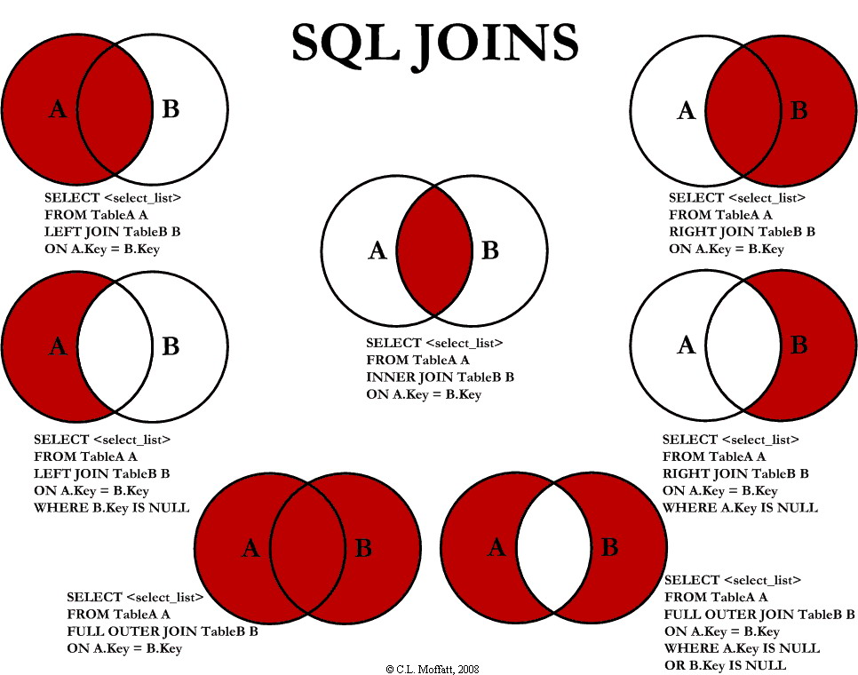

Clase 6: SQL y ADQL Avanzado - Minería de Datos y Cruces Espaciales#
En esta semana, daremos el salto cualitativo hacia la Minería de Datos Avanzada. Para responder preguntas científicas reales, rara vez nos basta con un simple SELECT *. Necesitamos filtrar con bisturí, realizar cálculos estadísticos directamente en los servidores de las agencias espaciales y cruzar catálogos incompletos sin perder información.
Aprenderemos a utilizar las cláusulas más potentes de los lenguajes de consulta relacional. Estas herramientas nos permiten realizar cálculos masivos en los servidores remotos, descargando únicamente los resultados estadísticos o las muestras perfectamente filtradas que necesitamos para nuestros gráficos en Python.
1. El Arte de los JOINs (Cruces de Tablas en SQL)#
Cruzar tablas es el núcleo de las bases de datos relacionales. Nos permite conectar entidades diferentes (ej. “Estrellas” y “Planetas”) usando sus claves (Primary y Foreign keys). Sin embargo, no todos los cruces son iguales y elegir el correcto es vital para la integridad científica de la muestra.
Representación Visual General: Imagina dos círculos superpuestos. El círculo izquierdo es la “Tabla A (Estrellas)” y el derecho es la “Tabla B (Planetas)”. La zona donde se cruzan representa los registros que tienen coincidencia (estrellas que tienen planetas).

Imagen tomada de: Link
A) INNER JOIN (La Intersección Definitiva)#
Devuelve ÚNICAMENTE las filas que tienen coincidencias en AMBAS tablas. Es el cruce más estricto. Si una estrella en la Tabla A no tiene planetas registrados en la Tabla B, esa estrella desaparece por completo del resultado final.
Descripción Visual del INNER JOIN: En el diagrama de dos círculos (Tabla A y Tabla B), solo la zona central de intersección está coloreada brillantemente. Los restos de los círculos A y B (donde no hay cruce) están en gris oscuro o transparentes, indicando que esos datos se descartan.
B) LEFT JOIN (Priorizando el Catálogo Principal)#
Devuelve TODAS las filas de la tabla de la izquierda (la primera que mencionas en el FROM), y las cruza con las que coincidan en la derecha. Si no hay coincidencia en la derecha, el resultado muestra NULL (vacío) para esas columnas, pero no borra a la estrella original de la muestra. Es vital para estudios de completitud.
Descripción Visual del LEFT JOIN: En el diagrama de Venn, todo el círculo de la Tabla A (izquierda) está coloreado brillantemente, incluyendo la zona de intersección con B. El resto del círculo B (derecha, sin cruce) permanece gris. Esto indica que se mantienen todas las estrellas de A, tengan o no planeta en B.
C) RIGHT JOIN (Priorizando la Tabla Secundaria)#
Es el espejo del LEFT JOIN. Devuelve todas las filas de la tabla de la derecha y busca coincidencias en la izquierda. Si no hay cruce, rellena la izquierda con NULL. En la práctica, se suele usar LEFT JOIN reordenando las tablas para mayor claridad.
Descripción Visual del RIGHT JOIN: En el diagrama de Venn, todo el círculo de la Tabla B (derecha) está coloreado brillantemente, incluyendo la intersección. El resto del círculo A (izquierda, sin cruce) permanece gris. Se mantienen todos los planetas de B, tengan o no estrella madre en A (aunque esto físicamente es raro, la lógica SQL lo permite).
D) FULL OUTER JOIN (La Fusión Total)#
Devuelve todas las filas de ambas tablas. Si hay coincidencia, las cruza; si no, rellena con NULL en el lado correspondiente. Es el cruce más inclusivo y genera las tablas más grandes. (Nota: Servidores astronómicos masivos como VizieR suelen restringir esta función por su altísimo consumo de memoria).
Descripción Visual del FULL OUTER JOIN: En el diagrama de Venn, ambos círculos (A y B) están completamente coloreados brillantemente, incluyendo la intersección. No queda ninguna zona gris. Absolutamente todos los datos de ambas tablas se mantienen en el resultado final.
2. Herramientas Avanzadas de Filtrado y Agrupación#
A) Funciones de Agregación (Estadística en el Servidor)#
En lugar de descargar un millón de filas para sacar un promedio en Python, le pedimos a la base de datos que haga la matemática. Siempre deben usarse junto con GROUP BY si queremos separar la estadística por categorías.
COUNT(columna): Cuenta el número de filas (registros) que no son nulas.MIN()/MAX(): Encuentra el valor mínimo o máximo de una columna numérica.AVG(): Calcula el promedio aritmético (Average).
B) Operadores Lógicos y de Patrón#
BETWEEN(Entre): Filtra valores dentro de un rango inclusivo.IN(En la lista): Permite filtrar por múltiples valores exactos sin escribir infinitosOR.LIKE(Como / Patrón): Se usa para buscar patrones en cadenas de texto usando el comodín%.DISTINCT(Distintos): Elimina los registros duplicados en los resultados.
3. ADQL Geométrico: CIRCLE y CONTAINS#
El dialecto ADQL (Astronomical Data Query Language) es el estándar del Observatorio Virtual (VO) para realizar búsquedas esféricas y cruzado de catálogos espaciales. Aquí no filtramos solo por números, sino por regiones del cielo.
A) Definición de Geometría: CIRCLE#
La función CIRCLE define una región cónica de búsqueda en la esfera celeste. Requiere el sistema de referencia ('ICRS'), las coordenadas del centro (ra, dec) y el radio de búsqueda en grados.
Descripción Visual de ADQL CIRCLE: Imagina una representación 3D de la esfera celeste (con líneas de cuadrícula de RA y Dec). Desde el centro (donde estaría la Tierra), se proyecta un cono visual hacia el cielo. Donde este cono toca la esfera celeste, se define una región circular gris transparente con un radio angular claramente etiquetado en grados.
B) Operación Espacial: CONTAINS#
La función lógica CONTAINS es el “bisturí espacial”. Devuelve Verdadero (1) o Falso (0) si una geometría (generalmente un punto o estrella) está completamente dentro de otra geometría (como el círculo definido anteriormente). Se usa casi exclusivamente dentro de la cláusula WHERE.
Descripción Visual de ADQL CONTAINS: Es un plano 2D de una región del cielo oscuro. Vemos un gran círculo gris transparente (definido por
CIRCLE). Una estrella brillante (Punto A) está dentro del círculo. Otra estrella brillante (Punto B) está fuera del círculo. Las etiquetas indican claramente: ‘CONTAINS(Punto A, Círculo) -> Verdadero (1)’ y ‘CONTAINS(Punto B, Círculo) -> Falso (0)’.
CheatSheet de ADQL#
La guía completa de ADQL, la de uso oficial en la comunidad, la encuentran en este Link
4. Pipelines Completos: Integración y Automatización#
(Esta sección permanece igual que la anterior, ya que los scripts son funcionales y generan sus propias imágenes .png al ejecutarse).
Pipeline 1: Agrupación y Estadística (El Censo de Exoplanetas)#
Script: censo_planetas.sh
#!/bin/bash
echo "1. Consultando Agregaciones en NASA Exoplanet Archive..."
QUERY="SELECT+discoverymethod,COUNT(pl_name)+as+total,AVG(pl_bmasse)+as+masa_promedio+FROM+ps+WHERE+pl_name+LIKE+'Kepler-%'+OR+pl_name+LIKE+'K2-%'+GROUP+BY+discoverymethod+ORDER+BY+total+DESC"
URL="https://exoplanetarchive.ipac.caltech.edu/TAP/sync?format=csv&query=${QUERY}"
wget -q -O estadisticas_kepler.csv "$URL"
echo "2. Ejecutando Análisis en Python..."
cat << 'EOF' > plot_censo.py
import pandas as pd
import matplotlib.pyplot as plt
import seaborn as sns
df = pd.read_csv('estadisticas_kepler.csv').dropna()
plt.figure(figsize=(10, 6))
sns.barplot(data=df, x='discoverymethod', y='total', palette='magma')
plt.xticks(rotation=45, ha='right')
plt.title('Misiones Kepler/K2: Descubrimientos por Método')
plt.ylabel('Total de Planetas Confirmados')
plt.xlabel('Método de Descubrimiento')
plt.tight_layout()
plt.savefig('censo_kepler.png')
print("¡Gráfica censo_kepler.png generada!")
EOF
python3 plot_censo.py
Pipeline 2: Reteniendo Datos con LEFT JOIN (SDSS)#
Script: quasares_leftjoin.sh
#!/bin/bash
echo "1. Ejecutando LEFT JOIN en SDSS..."
URL="http://skyserver.sdss.org/dr18/SkyServerWS/SearchTools/SqlSearch?format=csv&cmd=SELECT%20TOP%2020000%20s.z,p.g,p.r%20FROM%20SpecObj%20s%20LEFT%20JOIN%20PhotoObj%20p%20ON%20s.bestObjID=p.objID%20WHERE%20s.class='QSO'%20AND%20s.z%20BETWEEN%201.0%20AND%203.0"
wget -q -O quasares_join.csv "$URL"
echo "2. Graficando en Python..."
cat << 'EOF' > plot_join.py
import pandas as pd
import matplotlib.pyplot as plt
import seaborn as sns
df = pd.read_csv('quasares_join.csv', skiprows=1, names=['z', 'g', 'r'])
nulos = df['g'].isna().sum()
print(f"Quásares totales: {len(df)}. Quásares sin fotometría óptica: {nulos}")
df_limpio = df.dropna()
plt.figure(figsize=(8, 5))
sns.scatterplot(data=df_limpio, x='z', y='g', s=2, color='orange', alpha=0.5)
plt.title('Quásares (LEFT JOIN): Magnitud Óptica vs Redshift')
plt.xlabel('Redshift (z)')
plt.ylabel('Magnitud g')
plt.gca().invert_yaxis()
plt.savefig('quasares_leftjoin.png')
print("¡Gráfica quasares_leftjoin.png generada!")
EOF
python3 plot_join.py
Ejercicios Prácticos: Minería de Datos Avanzada#
Deben entregar un repositorio de GitHub que contenga el script de Bash (.sh), el script de Python (.py), las imágenes generadas y un archivo README.md con el análisis físico detallado de los resultados.
Ejercicio 1 (Individual): “Los Extremos de la Vía Láctea”#
No necesitamos descargar catálogos enteros si solo queremos conocer los límites estadísticos de una población estelar.
Bash/ADQL: Usa el Endpoint TAP de VizieR (https://tapvizier.cds.unistra.fr/TAPVizieR/tap/sync?request=doQuery&lang=ADQL&format=csv&query=) para consultar Gaia DR3 (“I/355/gaiadr3”). Usa las funciones de agregación
MIN(),MAX()yAVG()para calcular la Temperatura Efectiva (Teff) mínima, máxima y promedio de toda la muestra de estrellas brillantes (Gmag < 10). Recuerda usarsedpara formatear los espacios de tu consulta.Python: Como el resultado será de una sola fila y tres columnas, tu script de Python solo debe imprimir estos valores numéricos en la terminal de forma elegante usando
print(). No se requiere gráfica.README.md: Compara la temperatura mínima y máxima devuelta con las clases espectrales estelares teóricas (O, B, A, F, G, K, M). ¿A qué tipo de estrellas corresponden esos extremos?
Ejercicio 2 (Individual): “Patrones en el Cielo: El Telescopio TESS”#
Las misiones espaciales suelen nombrar a sus candidatos a exoplanetas con prefijos específicos.
Bash/SQL: Usa el Endpoint TAP de la NASA (https://exoplanetarchive.ipac.caltech.edu/TAP/sync?format=csv&query=). Usa
SELECT DISTINCThostname para obtener una lista única de estrellas anfitrionas confirmadas por la misión TESS. Para lograrlo, filtra usando la cláusulaLIKE 'TOI-%'(TESS Object of Interest). Ojo: en la URL, el símbolo%debe escribirse como%25para que internet lo entienda.Python: Lee el archivo CSV descargado e imprime en consola la cantidad total de estrellas únicas descubiertas por TESS que existen actualmente en la base de datos.
README.md: Investiga y describe brevemente qué es la misión TESS de la NASA y cuál es su principal diferencia estratégica respecto a la misión Kepler original.
Ejercicios 3 (Parejas): “Poblaciones Galácticas con BETWEEN e IN”#
Un estudiante programa la ingesta de datos en Bash/SQL y el otro programa el análisis en Python. Trabajen en ramas separadas y unifiquen con un Pull Request.
Estudiante A - Bash/SQL:
Consulta a
SDSScombinando tablas con unINNER JOIN. Une la tabla de espectros (SpecObj s) y la de fotometría (PhotoObj p) usando la condiciónON s.bestObjID=p.objID. Extrae la clase (s.class), el redshift (s.z), y los brillos (p.uyp.g).Usa la cláusula
INpara filtrar estrictamente objetos clasificados como (STAR,GALAXY).Usa
BETWEENpara limitar la muestra a aquellos con una magnitud ultravioleta (p.u) entre15y18.Descarga un máximo de 20,000 registros.
Endpoint SDSS: http://skyserver.sdss.org/dr18/SkyServerWS/SearchTools/SqlSearch?format=csv&cmd=
Estudiante B - Python:
Calcula el índice de color ultravioleta-verde restando las columnas (
u−g) en Pandas. Genera un histograma superpuesto (sns.histplot) de este color, separando las distribuciones visualmente según su clase estelar/galáctica (hue='class').Análisis (En conjunto): Observando la gráfica resultante, ¿existe un sesgo de color claro entre las estrellas seleccionadas y las galaxias en este rango específico de magnitud ultravioleta?
Ejercicio 4: “Asimetría Infrarroja con LEFT JOIN”#
Estudiante A - Bash/ADQL:
Realiza un
LEFT JOINespacial usando el TAP de VizieR.La tabla principal (izquierda) será Gaia DR3 (
"I/355/gaiadr3" AS g), limitada a 10,000 estrellas extremadamente brillantes en el cielo nocturno (Gmag < 8).La tabla secundaria (derecha) será el catálogo infrarrojo AllWISE (
"II/328/allwise" AS w).Crúzalas espacialmente usando
CONTAINSyCIRCLEcon un radio de 2 arcosegundos (2./3600.) en todo el cielo.Extrae la magnitud óptica (
g.Gmag) y la magnitud infrarroja (w.W1mag).
Estudiante B - Python:
La magia del
LEFT JOINasegurará que tengas las 10,000 estrellas de Gaia intactas. Aquellas que no tengan una detección en el catálogo infrarrojo AllWISE aparecerán con un valor nulo (NaN) en la columnaW1mag. En Python, usando Pandas, calcula e imprime exactamente qué porcentaje (%) de estas estrellas brillantes visibles carecen de datos en el infrarrojo medio.Análisis (En conjunto): Investiguen y escriban en el README.md por qué una estrella que es tan brillante en el rango de luz visible podría ser completamente indetectable por un telescopio infrarrojo como WISE.
Ejercicio 5: “Historia de los Exoplanetas (GROUP BY y ORDER BY)”#
Estudiante A - Bash/SQL:
Consulta la tabla ps del NASA Exoplanet Archive (https://exoplanetarchive.ipac.caltech.edu/TAP/sync?format=csv&query=).
No descargues la lista de planetas; pide la estadística. Extrae el año de descubrimiento (
disc_year) y usaCOUNT(pl_name) para saber cuántos planetas se descubrieron cada año.Usa
GROUP BYdisc_yearpara que el servidor haga la agrupación por ti.Usa
ORDER BYdisc_yearASCpara que los datos lleguen ordenados cronológicamente desde el primer descubrimiento hasta hoy.
Estudiante B - Python: Carga este ligero CSV agrupado. Grafica un diagrama de barras (plt.bar) donde el Eje X sea el año y el Eje Y sea el total de planetas descubiertos.
Análisis (En conjunto): En la gráfica observarán “picos” masivos y anómalos en años muy específicos (por ejemplo, 2014 y 2016). Investiguen en internet qué eventos astronómicos, publicaciones de artículos o liberaciones de datos masivos (Data Releases) de la NASA causaron estos saltos exponenciales históricos.